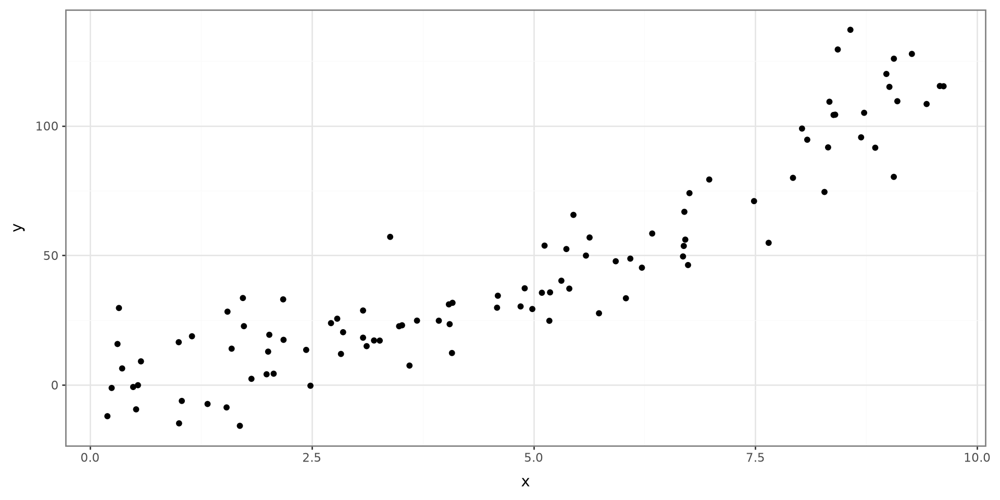
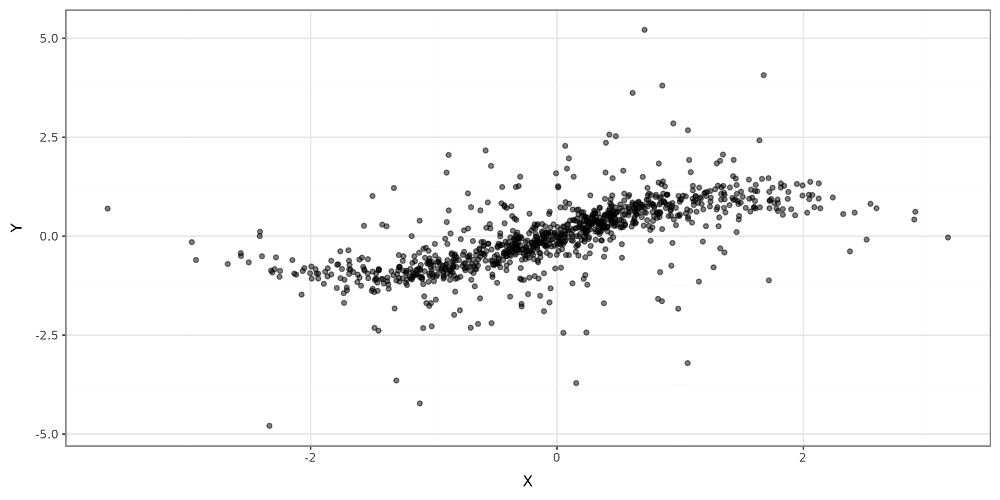
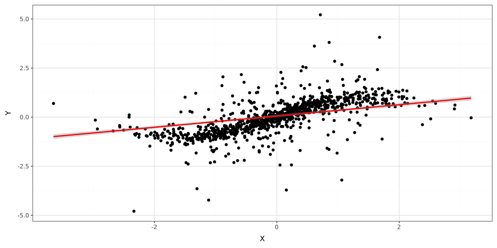
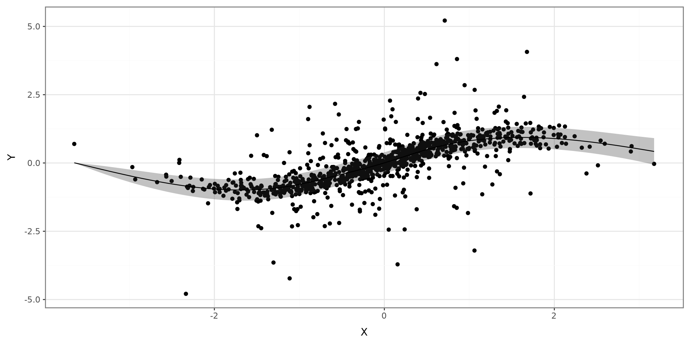
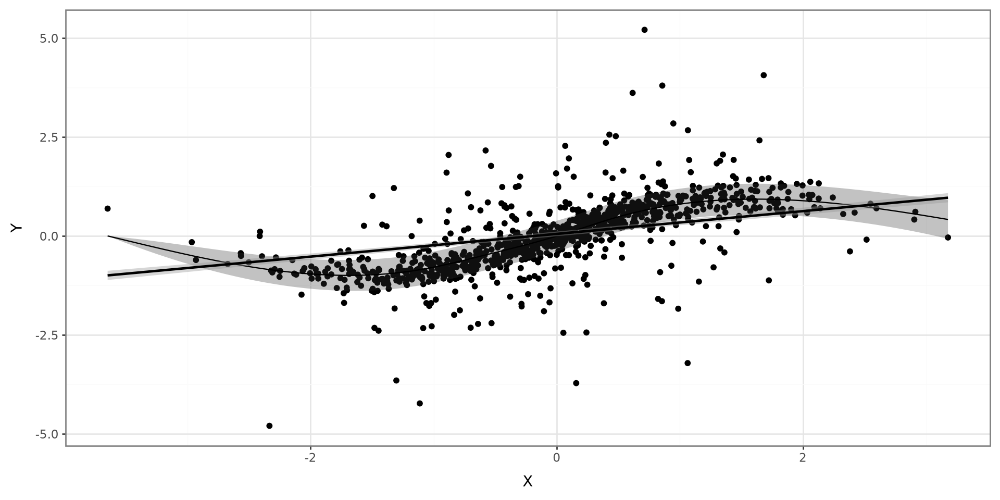
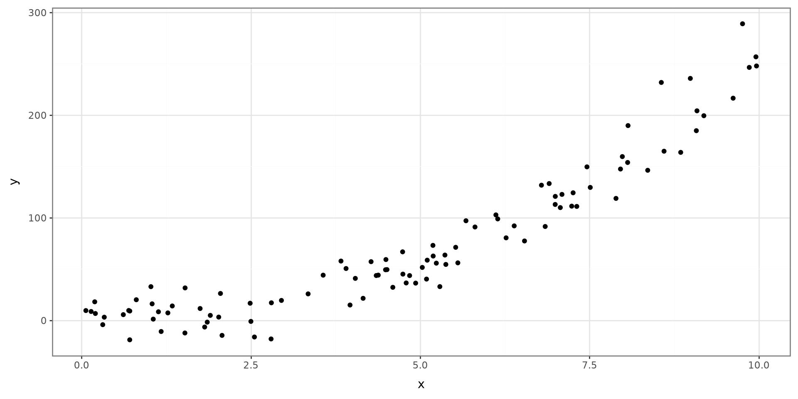
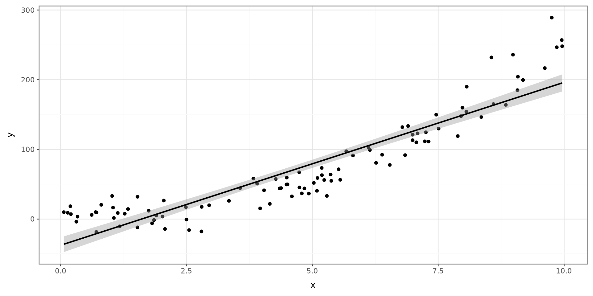
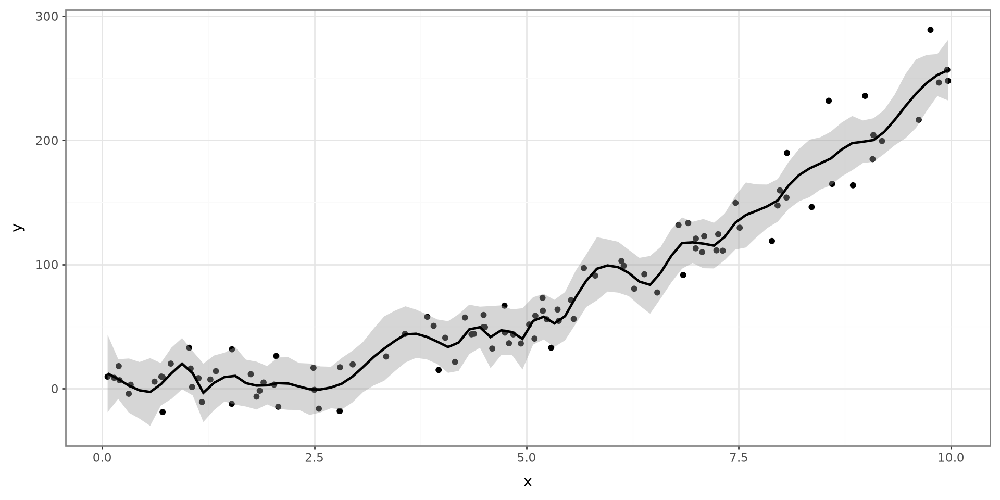
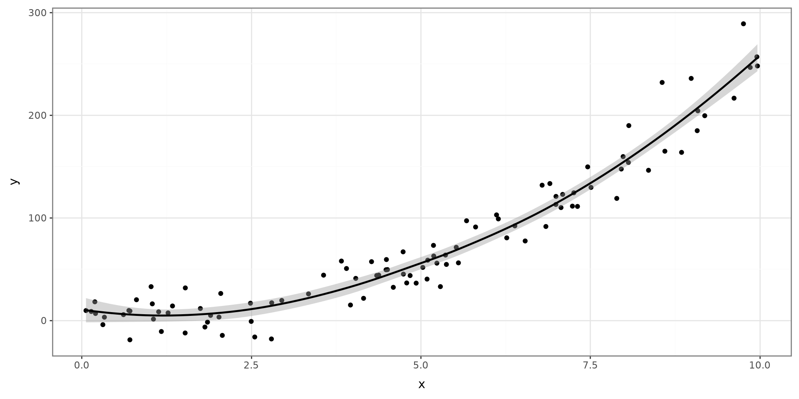
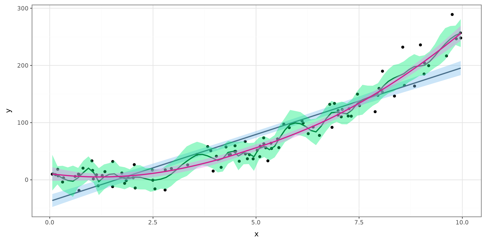

import numpy as np
import pandas as pd
from plotnine import *
from pygam import LinearGAM, s, l
import statsmodels.api as sm
from statsmodels.gam.api import GLMGam, BSplines
from sklearn.datasets import load_iris
from sklearn.neighbors import KNeighborsClassifier
from sklearn.metrics import confusion_matrix
from sklearn.svm import SVC
rng = np.random.default_rng(909) Introduction to Statistical Learning
Learning Outcomes
Introduction to Statistical Learning
Classification vs Regression
Supervised vs Unsupervised Machine Learning
Python Modules, Functions, and Parameters
Book

Introduction to Statistical Learning
Introduction to Statistical Learning
What is Statistical Learning?
Statistical learning is the task of predicting an outcome of interest given a set of predictor variables.
Motivating Example

Statistical Learning Model
\[ Y = f(\boldsymbol X) + \varepsilon \]
\(Y\): Outcome variable
\(f(\cdot)\): systematic component explaining \(Y\)
\(\boldsymbol X\): vector of predictor variables
\(\varepsilon\): error term
Modeling \(f(\cdot)\): Parametric
Linear Models
Generalized Linear Models (GLM)
Modeling \(f(\cdot)\): Nonparametric
Generalized Additive Models
Local-Linear Models
Smoothing Splines
Prediction
Statistical Learning is only concerned with an accurate \(Y\)
\(f(\cdot)\) is considered a black box
We will not know how \(\boldsymbol X\) explains \(Y\)
We choose flexible (nonparametric) models
Model Interpretability
With a focus on prediction, model interpretability declines
We will not know how changes in \(\boldsymbol X\) will affect \(Y\)
Classification vs Regression
Regression
Regression in statistical learning terms indicates predicting a continuous random variable.
What are the methods that we learned to model continuous random variables?
Example




Classification
Classification in statistical learning terms indicates predicting a categorical random variable.
What are the methods that we learned to model categorical random variables?
Example
Supervised vs Unsupervised Machine Learning
Machine Learning
Machine learning is a set of methods used for predicting and classifying data. Several statistical methods are considered machine learning techniques.
Common Methods
Regression
Mixed-Effects
Nonparametric Regression
Neural Networks
Tree-based methods
Bayesian Methods
Training Data
Training Data is the data set used to construct a model.
Supervised
Supervised Machine Learning techniques are techniques where the training data contains the outcome.
Unsupervised
Unsupervised Machine Learning techniques are techniques where the training data does not contains the outcome.
Model Adequacy
Quality of Fit: Regression
\[ MSE = \frac{1}{n}\sum^n_{i=1}\{y_i - \hat f(\boldsymbol x_i)\}^2 \]
Quality of Fit: Classification
\[ ER = \frac{1}{n}\sum^n_{i=1}I(y_i \ne \hat y_i) \]
Bias-Variance Tradeoff
Bias-Variance Tradeoff
\[ E(MSE) = E\left\{y-\hat f(x)\right\}^2 = Var\left\{\hat f(x)\right\} + Bias\left\{\hat f(x)\right\}^2 \]
Example

Using a Line

Using a Highly Fleible Model

Semi-Flexible

All
